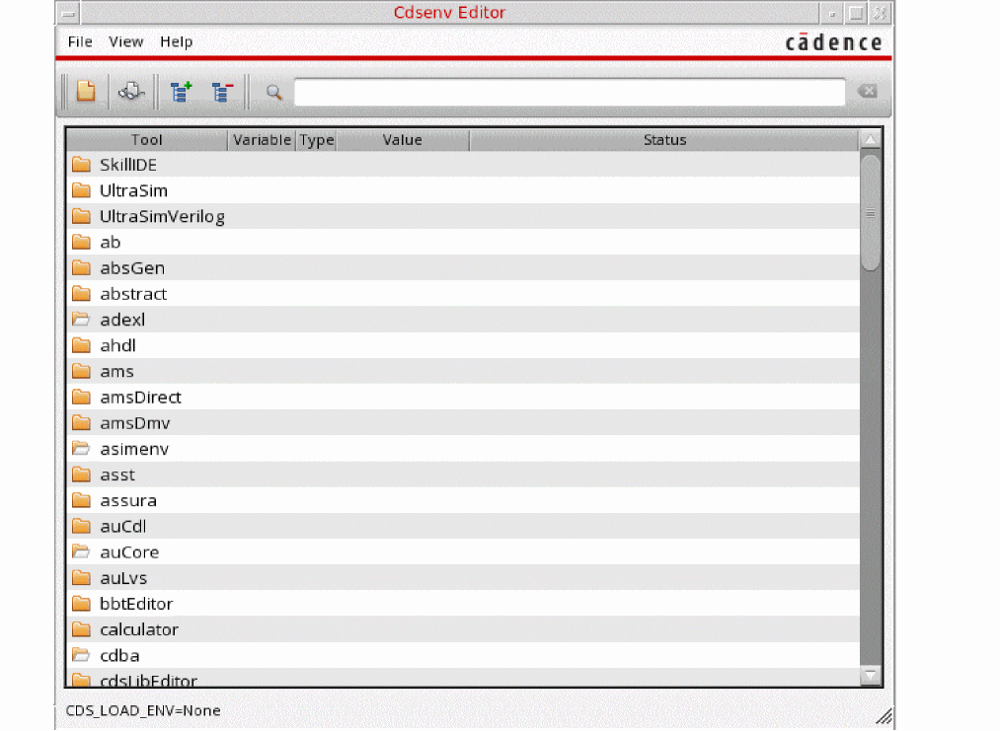

Opening Cdsenv Editor in CIW
Cdsenv Editor enables you to search for environment variables across multiple .cdsenv files belonging to different tools. The editor allows you to change values of environment variables and save the changes to the specified file.
To open Cdsenv Editor in the CIW:
-
Select Options – Cdsenv Editor or run the startCdsenvEditor SKILL function.
The tools with the open folder icon are loaded into Virtuoso and the tools depicted with closed folder icon are tools are not loaded.
Related Topics
Return to top